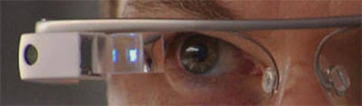
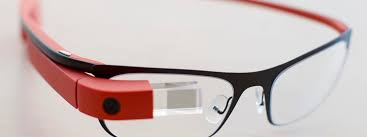

De acordo com fontes próximas do Google, os óculos vão contar com uma pequena tela de LCD ou AMOLED na parte superior e em frente aos olhos de usuário. Com o uso de uma câmera e GPS, você pode situar, assim como selecionar opções com o movimento da cabeça.
com o google glass será possível tirar fotos com até 5 megapixels e gravar vídeos com 720 linhas de resolução. Os primeiros vídeos e fotos capturados com o aparelho já começaram a circular pela rede, mas até agora ninguém tem muitas informações técnicas.
Quem pensa que para comandar o gGoogle Glass vai precisar de tecado e Mouse, se engana redondamente. O dispositivo vem com vários tipos de sensores e microfones embutidos. Assim, para dar um comando, basta falar ou passar o dedo lateral do óculos.
Segundo a própria Google, o Glass virá com uma bateria que tem autonomia suficiente para durar um dia inteiro. apenas algumas atividades como videoconferência e longas filagens vão exigir um pouco mais. Além disso ele vem com WI_FI, Bluetooth, 3G/4G e muito mais.